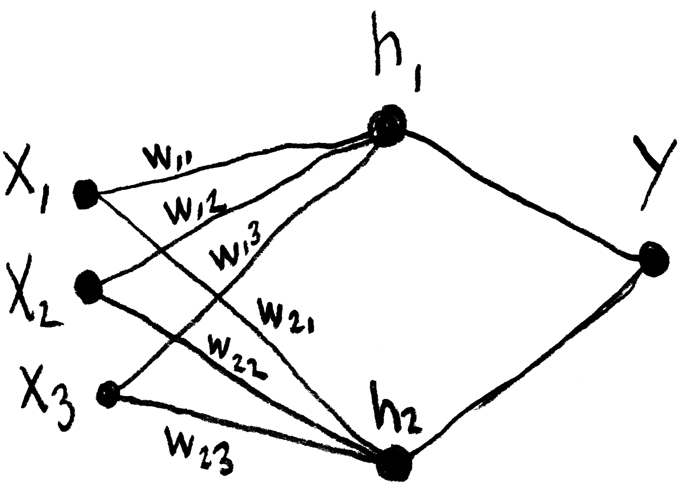
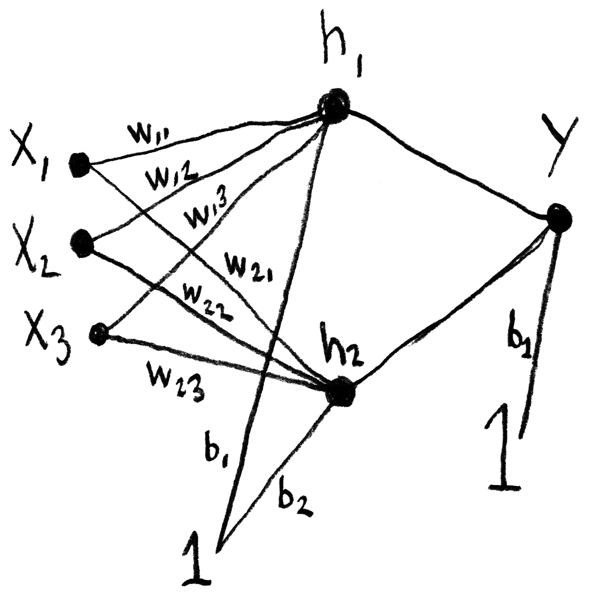
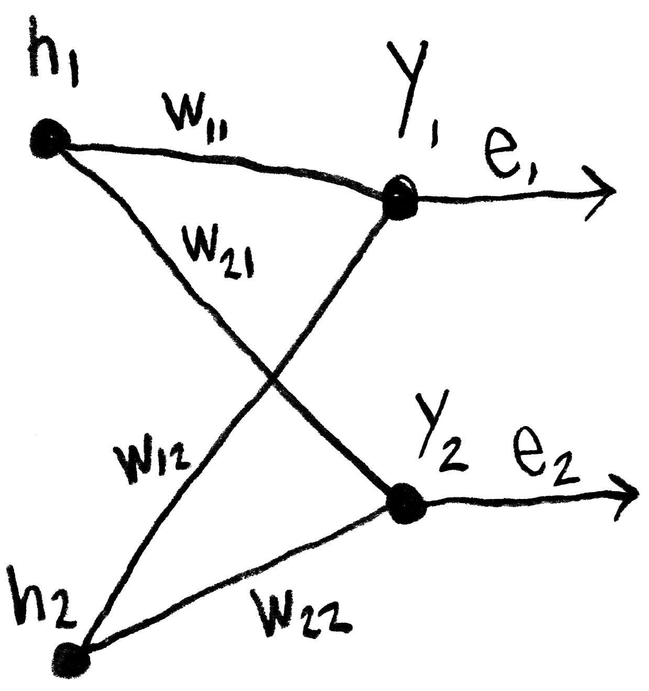

Small neural network
Below are some notes that I took while following Daniel Shiffman’s video tutorials on neural networks, which are heavily inspired by Make Your Own Neural Network, a book written by Tariq Rashid. The concepts and formulas here are not my original material, I just wrote them down in order to better understand and remember them.
Feedforward algorithm
The calculations made by one the network’s layers, which takes into account its synaptic “weights”, can be represented by the matrix product written down below, in which h represents an intermediary layer (or “hidden layer”) of the network, w represents the weights and x represents the inputs. In this inverted notation, ⃗wij indicates the weight from j to i.
This product can also be represented thusly:
And it’s also possible to simplify even more:
We must also add the bias B, whose value is 1.
The sigmoid function will be used as the activation function:
The calculation of the output layer Y will finally be done this way:
Backpropagation
Once the feedforward is done, we are able to calculater the error e, which must then be sent from the output layer to the preceding layers, by backpropagation. Here, ⃗wij represents the weight w between the output layer j and the hidden layer i.
We will also simplify this calculation by not normalizing the weights before multiplying them with the error:
Which is equal to this matrix product:
It should be noted that the weights matrix that was used during the feedforward was transposed to be used for the backpropagation.
Other resources
- — Machine Learning for the Web, a course by Yining Shi at Itp (Nyu).
- — How to build a Teachable Machine with TensorFlow.js, a tutorial by Nikhil Thorat (one of the developers of TensorFlow.js).
- — Make your own neural network, by Tariq Rashid.
- — Essence of Linear Algebra, a video series on the 3Blue1Brown YouTube channel.
- — Neural Networks, another series by 3Blue1Brown.
- — Essence of calculus, another series by 3Blue1Brown. (Chain rule, product rule.)
- — Neural Networks and Deep Learning.
- — Essential Math for Machine Learning, a course by Graeme Malcolm on edX.
Context
This blog post is part of my research project Towards an algorithmic cinema, started in April 2018. I invite you to read the first blog post of the project to learn more about it.